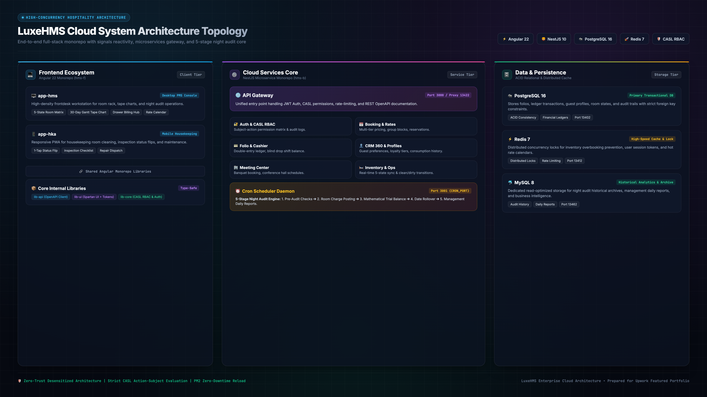

Folio & Cashier
Double-entry ledger · Shift balance · Real-time sync
Cron Scheduler Daemon
5-Stage Night Audit Engine · Automated Posting · Date Rollover
PostgreSQL 16
Primary Transactional DB · Folios · ACID Consistency
Auth & CASL RBAC
Subject-action matrix · Audit logs
Core Internal Libraries
Type-safe shared contracts · Monorepo
lib-core (CASL RBAC & Auth)
Shared RBAC policies & token validation